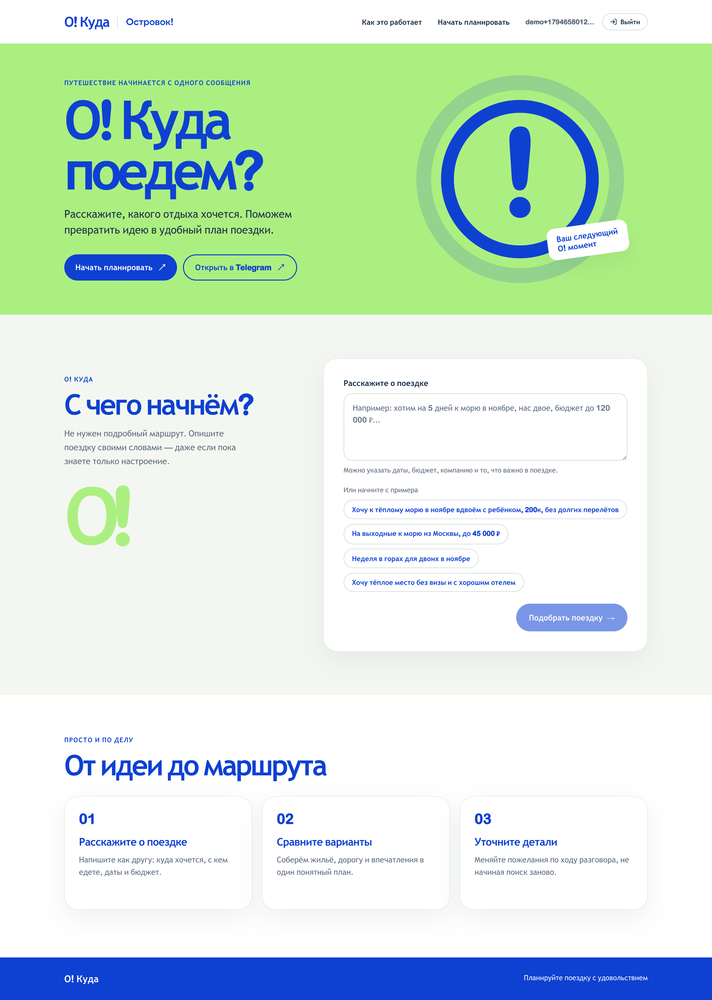
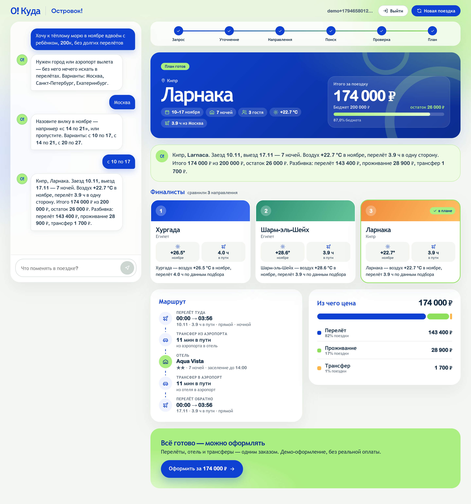
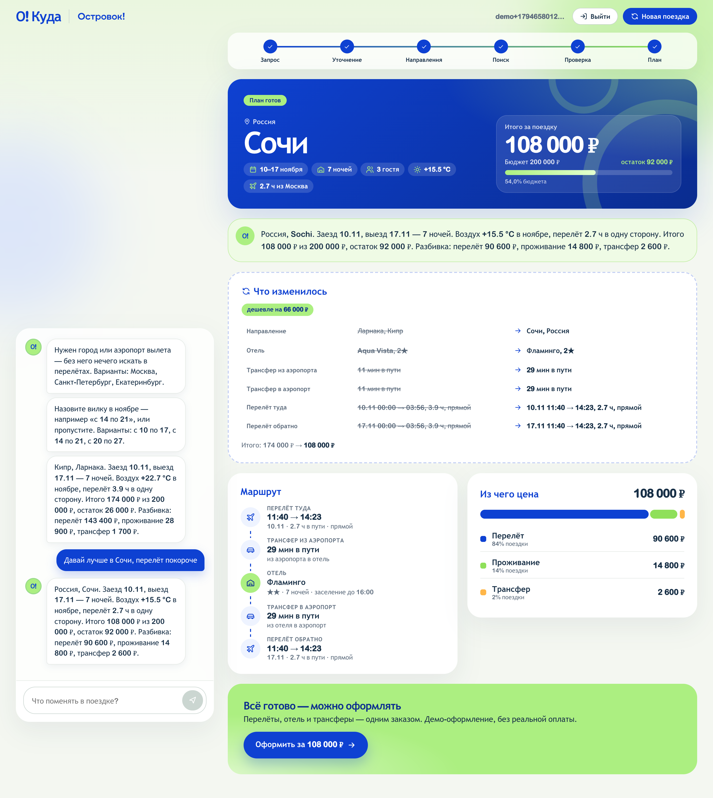
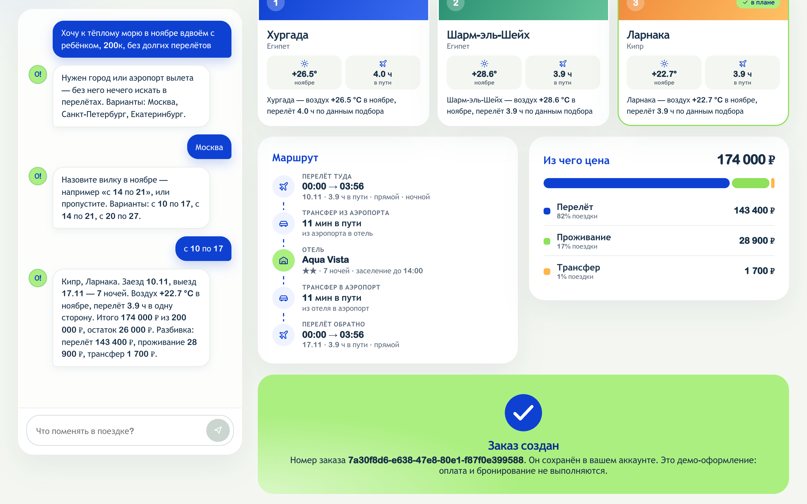

Разговорный запрос превращается в проверяемый план поездки: модель понимает язык и пишет текст, а цены, доступность, жёсткие ограничения и итоговое решение считает код. Каждое число в ответе сверяется с посчитанным состоянием до того, как увидит пользователя.
Модульный монолит: агент планирования — библиотека внутри backend-процесса, границы между модулями — пакеты и типизированные контракты. Единственная публичная точка входа — nginx; backend, web и Postgres опубликованы только на loopback.
browser / Telegram Mini App
│
▼
nginx :8080 ── per-IP rate limits, security headers, unbuffered SSE
│
┌─────┴─────┐
▼ ▼
backend :8000 web :5173
FastAPI React + TS
│
├─ planning agent (in-process library)
│ graph → tool registry → validation → repair
▼
PostgreSQL 16 + pgvector
hard filter в SQL · BM25 + cosine · RRF
Каждое решение закрывает конкретный класс отказов LLM-демо: выдуманная цена, потерянное ограничение, забытый отель, тихая подмена направления.
Чат производит типизированную дельту требований, а не состояние. Числа на экране берутся из состояния после хода, текст — только подпись к ним.
Векторная близость ранжирует внутри допустимого множества и не может его расширить. BM25 считается в Postgres с русской морфологией, слияние lanes — weighted RRF.
Тип Money отвергает бинарные дроби на входе; фронтенд зеркалит это BigInt-копейками. Модель получает готовые строки сумм и копирует их, а не форматирует сама.
Две правила: числа, которых нет в состоянии, и ценовые утверждения, противоречащие ledger («бесплатно», «скидка»). Одна регенерация, затем шаблон из состояния.
Две короткие транзакции с LLM-вызовом между ними и compare-and-swap записью по версии. Ни row lock, ни соединение пула не держатся 45 секунд хода.
argon2id + JWT access/refresh с ротацией и детектом переиспользования. Чужой trip — 404, а не 403: id не является оракулом существования. Telegram initData — второй путь входа.
Три per-IP зоны nginx: auth 5 r/s, планирование 2 r/s, чтения 20 r/s, плюс cap соединений. 429 отдаётся JSON в форме ошибок FastAPI, security headers попадают и на 429.
Сценарий prompt-injection доказывает, что атака дошла до модели, и только потом — что ответ чист. Прогон без ответов модели помечается «нет сэмплов», а не «0% точности».
Каждая строка воспроизводится командой из репозитория или сырым артефактом
в docs/evidence/. Нагрузочных замеров нет: стенд не нагрузили — значит цифр
RPS и p95 под нагрузкой здесь не существует.
| Что | Результат | Источник |
|---|---|---|
| Тесты | 492 пройдено, 4 пропущено; все пропуски — live-LLM гейт | make test |
| Покрытие | 87% | make coverage |
| Типы | mypy --strict, чисто | make lint |
| Офлайн-evaluation | 16 сценариев, все проверки зелёные | make eval |
| Точность разбора (live) | 37/37 обязательных полей, 53/55 проверок, exact match 0.90 | артефакт |
| Стоимость того прогона | 1.07814 ₽ за 20 кейсов | тот же артефакт |
| Async end-to-end | 5/5 кейсов | артефакт |
| Браузерный прогон | 11 шагов, 0 упавших запросов; один искусственный 401 пережит молчаливым refresh | make demo-shots |
Третий live-прогон упал с ConnectTimeout на всех
20 вызовах и закоммичен рядом с успешными: артефакт.
Exact match 0.95 → 0.90 между двумя замерами на одном датасете — дисперсия модели; два прогона
не дают доверительного интервала.
Снимки сделаны headless Chromium по живому стеку через nginx
(make demo-shots), не нарисованы. Сценарий: регистрация → уточняющие вопросы →
план → оформление → перезагрузка с продолжением хода → правка «давай в Сочи» с диффом.




Нужен Docker Desktop с Compose. Дефолтный провайдер — детерминированный mock, ключи не требуются; живой OpenAI-совместимый провайдер включается только явным .env.
cp .env.example .env
make setup # Python-окружение из requirements.lock
make up # postgres + backend + web + nginx, миграции
make seed # синтетический каталог
make test # 492 теста
make demo-shots # браузерный прогон и скриншотыОткрыть http://localhost:8080: nginx — единственный опубликованный порт.